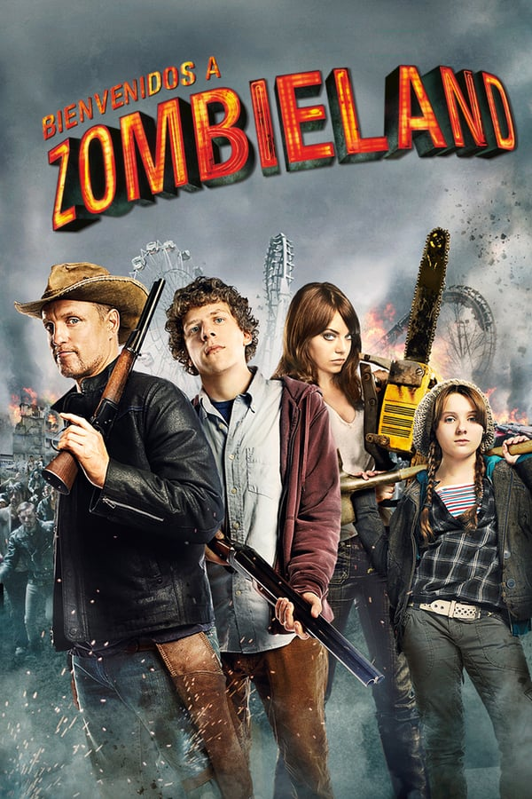
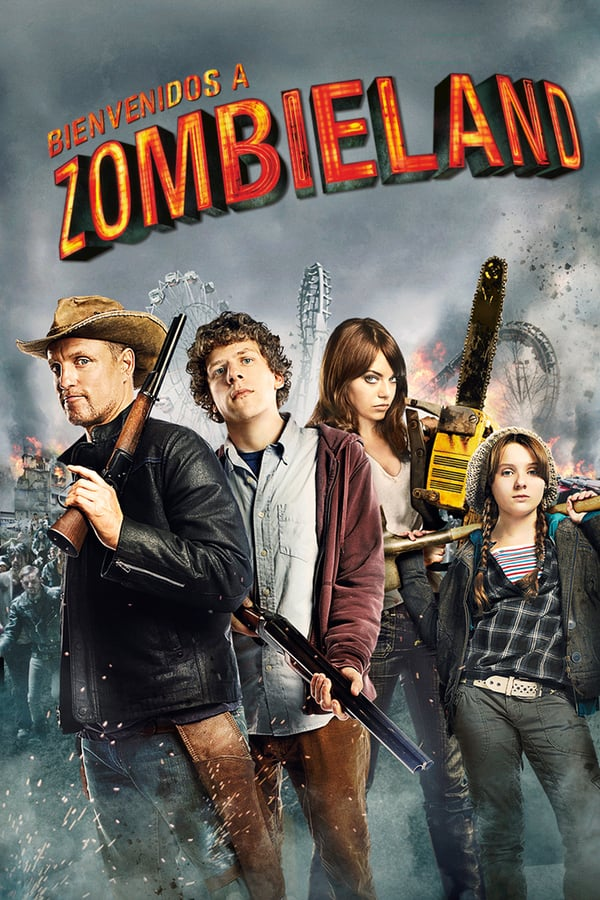

Cumpleaños: Jul 23, 1961
Lugar de Nacimiento: Midland, Texas, USA
Serie mejor valorada: Nanking (2007)
Tras su graduación se trasladó a Nueva York y comenzó a estudiar en el Biloxi Blues de Neil Simon. En 1985 fue elegido para el papel de Woody Boyd, el ingenuo y cordial camarero de la serie de televisión Cheers, con el que ganó un Emmy, entre otros premios. Su primera actuación en el cine fue en la película Gatos salvajes de 1986 junto a Goldie Hawn. Continuó trabajando con pequeños papeles en el cine hasta el enfrentamiento amoroso que protagonizó con Michael J. Fox en la película de 1991, Doc Hollywood. Posteriormente Harrelson trabajó en películas como Asalto al tren del dinero, La cortina de humo, White Men Can't Jump, Vaqueros de Nueva York, Indecent Proposal, Hi-Lo Country y Natural Born Killers de Oliver Stone de 1994, donde interpreta a un despiadado asesino. En 1996 protagonizó la controvertida película The People vs. Larry Flynt, que narra la vida del empresario Larry Flynt, y por la cual fue nominado al Oscar al mejor actor. En 2001 volvió a la televisión durante siete episodios de la comedia Will & Grace de la NBC. Interpretó a una prostituta travesti en la película Anger Management, protagonizada por Adam Sandler y Jack Nicholson, y al agente del FBI Stan Lloyd en El gran golpe.
 
